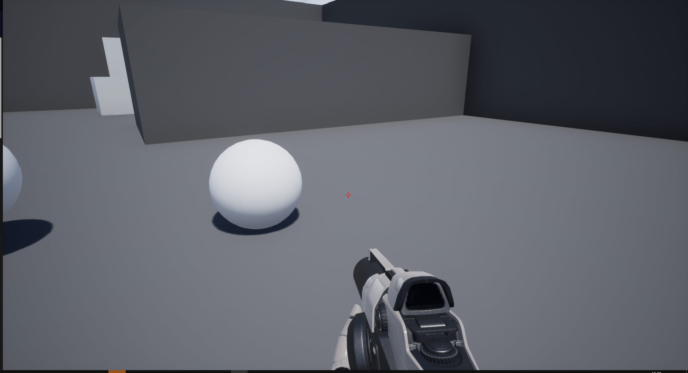
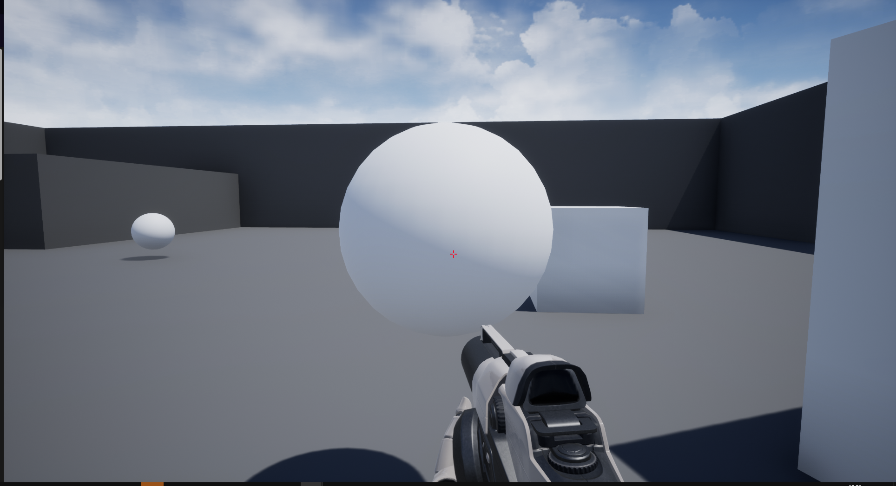
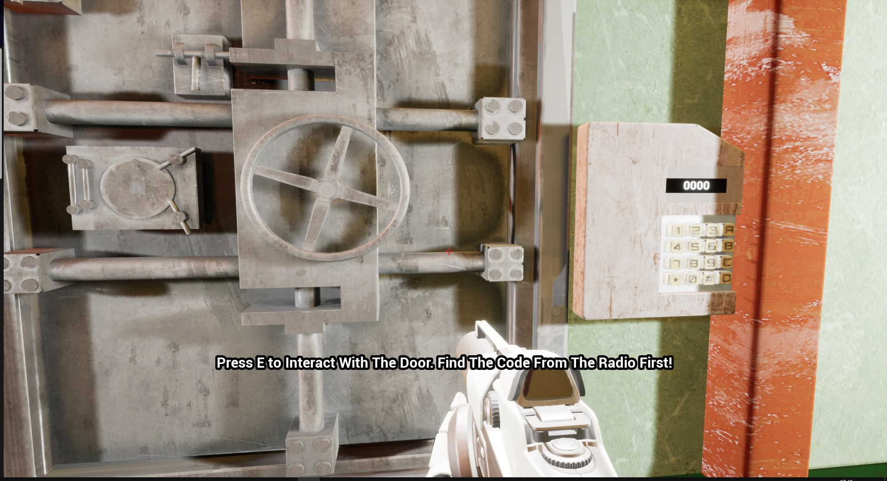
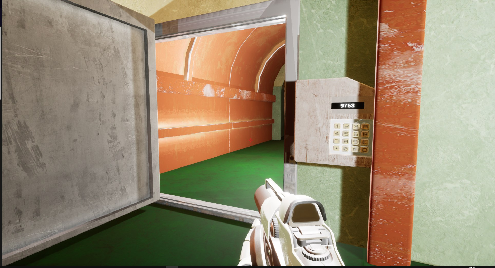

This was a group project set by Antimatter Games where we had 5 days in order to create a basic bunker scene with interactable elements. For this my team consisted of 1 games programmer, 1 computer science student and 3 modellers. In this project we used blueprints for the functionality. I implemented a keypad on a door that the user can interact with, the ability to pick up and move around objects as well as a widget that can display information about an object such as how to interact with it.
 This showcases the ability to pick up and move around certain objects in the scene, this is done by calling a line trace and then checking whether or not the actor hit has a tag, if the actor does have a tag the object is set as a child of an item actor within the player blueprint.
 This showcases the ability to enter numbers on a keypad, this was done by creating a widget object, then overlaying a keypad model ontop of the widget and then using a widget interaction to call an event bound to each button on the keypad.